Bloque corto
7 días
USD 1.960 aprox.
- Medellín, Minca, Tayrona y Palomino
- Noche, montaña, selva y playa
Propuesta para el grupo · enero 2027
Dos semanas de ciudad, selva, Caribe e isla. Arrancamos todos juntos el sábado 9 de enero en Medellín y cada uno se queda 7, 10 o 15 días según su plata y sus vacaciones.
Bajá o usá las flechas ↓ ↑ para pasar de slide.
Por qué Colombia
Miramos las alternativas para dos semanas entre amigos. Colombia es la única que junta ciudad, naturaleza, playa y noche en un solo viaje, con vuelo corto y sin barrera de idioma.
Valores aproximados, armados por nosotros para comparar. El de Colombia sale del presupuesto detallado más abajo.
| Destino | Por persona, ~2 semanas | Lo bueno | Lo que no cierra |
|---|---|---|---|
| Europa | USD 3.500–5.000 | Ciudades, historia, fiesta | Vuelo de 1.200–1.600 y 80–120 € por día. No llega la mitad del grupo. |
| Sudeste asiático | USD 2.500–3.500 | Barato allá, playas increíbles | Vuelo de 1.500–2.000, más de 30 h de viaje. Para que valga, necesitás 3 semanas. |
| Costa Rica | USD 2.500–3.500 | Naturaleza top | Precios tipo Estados Unidos y poca noche. |
| Nordeste de Brasil | USD 1.500–2.300 | Playas lindas (Pipa, Jeri) | Vibe más tranquila, y Brasil ya lo hicimos. |
| Colombia elegido | USD 1.440–3.140 | Ciudad + selva + Caribe + isla, en español | Enero es temporada alta: hay que comprar ya. |
Por qué ahora
Estamos en una etapa de salir, conocer gente y sumar experiencias. En unos años este viaje ya no se arma igual.
Medellín → Costa → Cartagena es el circuito mochilero clásico. Te cruzás a los mismos grupos en varias paradas y los hostels arman planes todos los días.
De día hay selva, cascadas, parapente, ríos e islas. La noche es un condimento, no el viaje entero.
Arrancamos todos juntos. El que tiene una semana se vuelve el 16, el que tiene más sigue. Nadie condiciona a nadie.
El sábado 9, el día que llegamos a Medellín, es el cumpleaños de Pancho. La primera noche del viaje es su festejo.
Hablás con cualquiera desde el minuto uno, y eso cambia todo cuando la idea es conocer gente.
Desde noviembre hay directo Buenos Aires–Medellín (JetSMART) y desde enero, Cartagena–Buenos Aires (Aerolíneas).
¿Por qué enero?
De diciembre a marzo casi no llueve en el Caribe ni en Medellín. Es la mejor época del año para playa, Tayrona y San Andrés.
Es cuando la mayoría tiene las vacaciones largas y es más fácil pedir días en el laburo.
El parque cierra del 1 al 15 de febrero y del 1 al 15 de junio. En enero está abierto.
Lo más caro y lleno es del 20 de diciembre al finde de Reyes (9–11 ene). Después la temporada alta va bajando hasta que los colombianos vuelven a clases, alrededor del 19 de enero.
| Alternativa | Lo bueno | Por qué no |
|---|---|---|
| Fines de febrero / principios de marzo | Sigue seco, más barato y más vacío | Reja no puede en febrero y Lucas tiene un casamiento en marzo. Del 21 al 28 de marzo es Semana Santa, temporada alta otra vez. El ahorro sería de unos USD 150–300 por persona, casi todo en vuelos. |
| Mitad de año | Clima aceptable en la costa | Son las vacaciones de mitad de año en Colombia, Tayrona cierra la primera quincena de junio y acá es invierno, con vacaciones cortas. Patearlo seis meses arriesga que se bajen varios. |
¿Es solo un viaje de joda?
Si no te copa salir todas las noches, no pasa nada: en Minca y Tayrona la noche es hamaca, estrellas y cerveza en el hostel. Y en cada parada hay plan de día para todos.
Elegí tu bloque
Precios de enero 2027 por persona, todo incluido (vuelos, alojamiento, comida, salidas, actividades y seguro). "Medio" es habitación privada para el grupo en hostel social y todas las actividades del plan.
Bloque corto
Bloque medio
Bloque completo
Levers de precio
Antes de mirar los números
El presupuesto se armó haciendo todo, todos los días: cada excursión, cada tour y cada salida de cada lugar. Es el techo, no lo que vamos a gastar seguro. Seguro hay cosas que a alguno no le interesan tanto: en vez de contratar la excursión, quedarse en la playa o en la pileta del hostel. Eso es gratis, y cada cosa que no hacés es plata que no gastás. Saltear solo el parapente y el barco a Cholón ya baja ~USD 140.
Hay palancas que decidimos entre todos y otras que elige cada uno. Las grupales se arreglan una vez; las individuales se tocan en el modo mix del día por día. Montos aproximados por persona.
Grupales Las decidimos juntos
Hostel social de los buenos o boutique y hotel de playa. Lo elegimos juntos porque define dónde estamos todos.
hasta ~USD 570 más en el viaje completoCombis compartidas, buses y taxis entre 4, o transfers privados puerta a puerta.
~USD 50–100 en el viajeGuatapé en bus, tubing sin agencia, cayos en tour compartido, bus de la isla en vez de carrito.
~USD 75 menos en el viajeMás días de playa y hostel sin actividades pagas. Se descansa y casi no se gasta.
un día libre cuesta ~USD 30–60 menosVuelos antes del 31 de octubre y hostels con cancelación gratis, antes de que se llenen las privadas.
la promo de ida ahorra ~USD 80Desayunos, previa y alguna cena cocinando juntos en vez de todo afuera.
~USD 10–15 por díaIndividuales Las elige cada uno
7, 10 o 15 días. Es la palanca más grande y la elige cada uno.
~USD 1.200 entre 7 días y el completoMismo hostel que el grupo, pero cama en dorm en vez de la privada. Se comparte todo menos la pieza.
~USD 200 menos en 14 nochesPromo directa sin valija o con escala, contra directo con valija.
~USD 150 de diferenciaEn los vuelos internos (Medellín–Santa Marta y Cartagena–San Andrés) la valija se paga aparte.
~USD 50 menosParapente, barco a Cholón, tour de Guatapé: cada uno puede bajarse de alguna y quedarse en el hostel o la playa.
parapente ~USD 76 · Cholón ~USD 65Menú del día, puestos y super contra restaurante en cada comida.
~USD 240 en el viajePrevia en el hostel y bares sin cover, o barra libre y mesa en boliche.
~USD 20–60 por salidaParapente de 30 min, lancha privada, cena de cumple en restaurante: se suman uno por uno.
de ~USD 15 a ~USD 65 cada unoVuelos
Cada uno compra la ida a Medellín y la vuelta desde donde termina su bloque. Precios por persona, solo ida, buscados en octubre 2026.
JetSMART directo desde Ezeiza, desde USD 219 en promo de lanzamiento (sin valija). Con escala ~USD 300; Avianca directo ~USD 600.
JetSMARTVuelo interno de 1,5 h. La valija va aparte (~USD 20–30): comprarla al reservar.
Vuelta del bloque de 7 días, con escala.
Vuelta del bloque de 10 días. Desde enero hay directo de Aerolíneas a Aeroparque (ida y vuelta desde ~USD 520–577).
AerolíneasCartagena → San Andrés, una hora. Valija aparte.
Vuelta del bloque completo, vía Medellín, Bogotá o Panamá.
Colombia pide pasaje de salida para entrar: hay que tener la vuelta comprada antes de viajar.
Qué tenemos que hacer
7, 10 o 15 días. Con eso sabemos cuántas camas reservar en cada parada.
Las tarifas de los vuelos nuevos son las primeras que se agotan, y enero es temporada alta.
Habitaciones privadas para el grupo, que son pocas y se van primero. Así podemos sumar o restar gente.
Al menos 10–15 días antes. Es gratis en vacunatorios públicos y la pueden pedir en Tayrona.
Uno para Medellín, otro para la Costa y otro para San Andrés. Así el que se va antes cierra las cuentas limpio.
Para tener en cuenta
En Medellín hay robos con escopolamina, sobre todo por apps de citas. Primera cita en lugar público, nunca dejar el vaso solo y no llevar gente recién conocida al hostel sin avisar al grupo.
No usarlo en la vereda saliendo de boliches. Moverse en Uber, DiDi o InDrive.
Pesos colombianos para Tayrona, la Piedra del Peñol, Minca, mototaxis y Johnny Cay. Tarjeta para hostels y restaurantes.
Medellín es templado y fresco a la noche: llevar buzo. En la costa hace calor y hay brisa fuerte. Protector y repelente sí o sí.
Mochila chica para la noche en Tayrona. La grande se deja en el hostel de Palomino.
Sumarse al grupo de WhatsApp de cada hostel el primer día y anotarse a los planes: pub crawls, salsa, tours.
Precios por persona en dólares, para enero 2027, relevados a principios de octubre de 2026: vuelos buscados por Lucas, tarifas oficiales 2026 y alojamiento proyectado a temporada alta. Los hostels para las fechas exactas conviene chequearlos al reservar. Las fotos de cada parada se cargan desde la carpeta fotos/ del repo; si falta alguna, se muestra una ilustración. Los botones "Ver fotos" llevan a más imágenes.
Modo mix: tocá en cada día la opción que quieras (ajustado, medio o con gustos) y en la tabla de cada parada el alojamiento y la comida. El total de arriba se actualiza al instante. Los vuelos internacionales y el seguro siguen el nivel que elegiste arriba.
Parada 1 · 3 noches · sáb 9 → mar 12
Noche, ciudad y gente: la parada para arrancar a full.
Por qué arrancamos acá: es la parada más fuerte de noche y donde se "arma" el grupo. Llegamos con energía, y el domingo 10 es víspera de feriado, así que salen los paisas también. De día no es solo ciudad: Guatapé y el parapente son de lo mejor del viaje.
Cómo lo calculamos · por persona · enero
| Nivel | Alojamiento | Por noche | Comida y salidas por día |
|---|---|---|---|
| Ajustado | Dorm en Viajero o Masaya | ~USD 30 | ~USD 25 |
| Medio | Privada para 4–6 en Los Patios, Viajero o Masaya | ~USD 45 | ~USD 40 |
| Con gustos | Privada con baño o boutique | ~USD 75 | ~USD 70 |
Dónde dormir · El Poblado
El 9 de enero es el cumpleaños de Pancho: cena de cumple todos juntos y después rooftop del hostel o Provenza para el que quiera seguir.
Aterrizamos en Rionegro, a ~45 min de la ciudad. Taxi o Uber compartido a El Poblado y las valijas quedan en el hostel: Medellín es nuestra base por 3 noches.
Traslado Aeropuerto → El Poblado en taxi o Uber compartido (~USD 8)
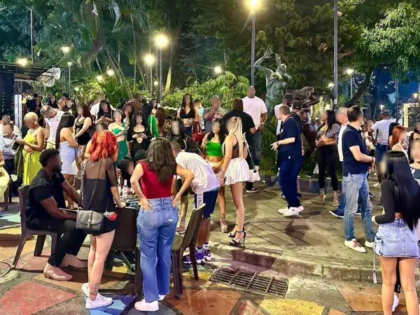
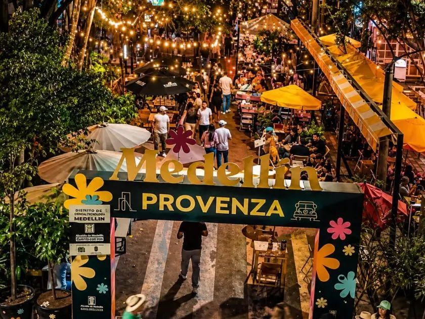
Previa en el hostel y bares sin cover en Provenza
Traslado, cena de cumple y salida por Provenza
incluye traslados ~USD 8Cena de cumple en restaurante y mesa en un boliche de Provenza
Salimos temprano (7 am) para ganarle a la gente. Subimos los 740 escalones de la Piedra, paseo en lancha por la represa y almuerzo en Guatapé. A la noche, la salida grande: víspera de feriado.
Las valijas se quedan en el hostel. Salimos con mochila chica y volvemos a dormir a Medellín.
Traslado Transporte incluido en el tour (o bus ~USD 12 ida y vuelta)
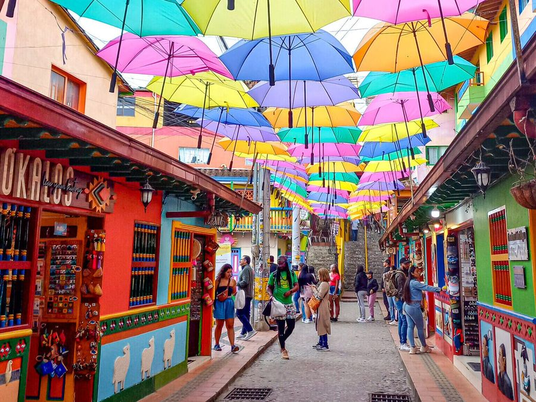
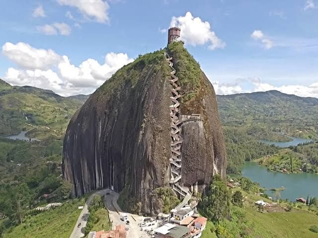
Ir por cuenta propia en bus desde la Terminal Norte en vez de tour (la Piedra se sube igual)
Tour a Guatapé, Piedra del Peñol y lancha
Lancha privada en la represa y almuerzo en restaurante
Vuelo en tándem con instructor sobre el valle (no hace falta experiencia; se vuela de mañana si el clima acompaña). A la tarde, Comuna 13 por cuenta propia en metro (estación San Javier) y free tour a la gorra: grafitis, escaleras eléctricas e historia del barrio. Noche tranqui.
Al parapente nos buscan y nos traen al hostel. A la tarde, metro a la Comuna 13. Todo con mochila chica.
Traslado Puerta a puerta a San Félix (~USD 10–15) y metro a la Comuna 13 (~USD 1)
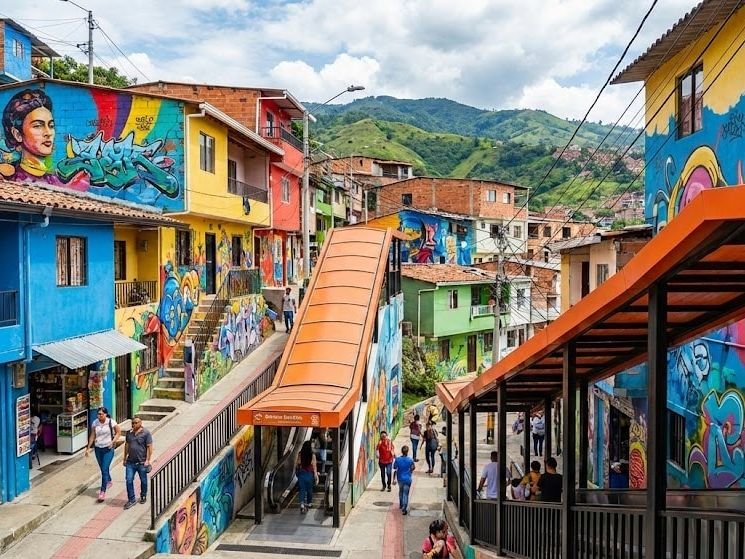
Sin parapente: solo la Comuna 13, que es casi gratis (metro + propina)
Parapente 15 min con traslado (~USD 77) y Comuna 13 en metro con free tour
incluye traslados ~USD 13Parapente de 30 minutos en vez de 15
Parada 2 · 2 noches · mar 12 → jue 14
Selva de montaña, cascadas y hamaca: descanso absoluto.
Por qué: el que hizo este viaje el año pasado dice que Minca y Tayrona fueron lo mejor. Es un pueblito en la Sierra Nevada, metido en la selva de montaña: cascadas, café y hamacas mirando el valle. Ojo, no tiene playa. Es la parada para bajar un cambio después de Medellín, y casi no hay masificación.
Cómo lo calculamos · por persona · enero
| Nivel | Alojamiento | Por noche | Comida y salidas por día |
|---|---|---|---|
| Ajustado | Dorm | ~USD 28 | ~USD 25 |
| Medio | Privada en Casas Viejas o Mundo Nuevo | ~USD 40 | ~USD 40 |
| Con gustos | Ecolodge o cabaña con vista | ~USD 70 | ~USD 65 |
Dónde dormir
En Minca no hay cajero: llevar efectivo en pesos colombianos. Casas Viejas queda arriba del pueblo y se sube en 4x4 (~USD 20 por persona).
Primer contacto con la Sierra Nevada: llegamos a la tarde y vemos el atardecer desde la montaña.
Check-out temprano y al aeropuerto con las valijas. Santa Marta para nosotros es solo aeropuerto y terminal: de ahí subimos directo a Minca (40–60 min, montaña), taxi hasta el pueblo y mototaxi o 4x4 hasta el hostel. Dos noches.
Traslado Vuelo Medellín–Santa Marta (~USD 63 + valija ~25), taxi del aeropuerto a Minca (~USD 7) y mototaxi al hostel (~USD 6)
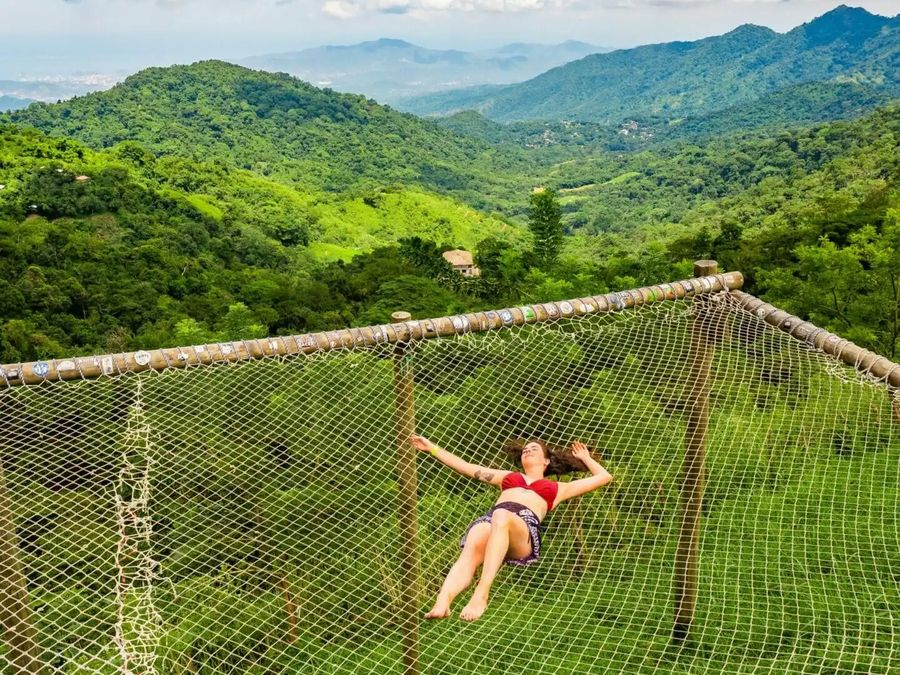
Colectivo a Minca en vez de taxi y solo mochila en el vuelo
Vuelo con valija, taxi del aeropuerto a Minca y mototaxi
incluye traslados ~USD 101Transfer privado del aeropuerto a Minca
Pozo Azul y Marinka a pie o en moto, recorrido por una finca de café y atardecer en Casa Loma. Cena en el hostel con otros viajeros.
Las valijas quedan en el hostel de Minca. Cascadas y café con mochila chica, todo cerca.
Traslado Mototaxis a las cascadas (~USD 6)
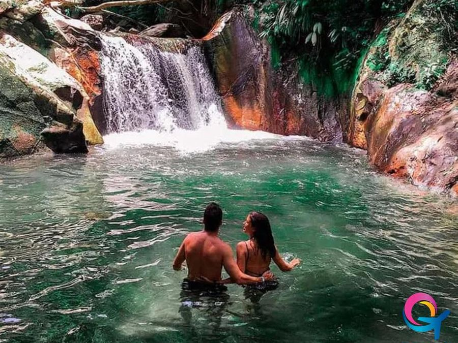
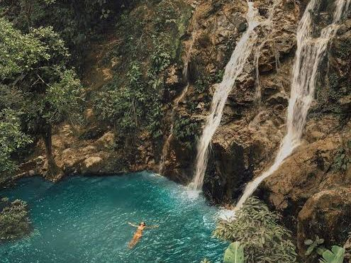
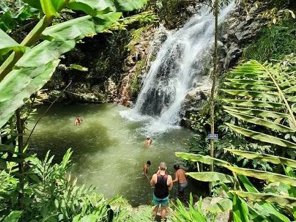
Cascadas a pie, sin moto
Cascadas y finca de café
incluye traslados ~USD 6Moto con guía a las cascadas y tour de café
Parada 3 · 1 noche · jue 14 → vie 15
Selva que termina en el mar: naturaleza pura y cero joda.
Por qué dormimos adentro: Tayrona es un parque nacional donde la selva termina en el mar, con playas entre piedras gigantes. De día se llena de excursiones, pero a la tarde se van y Cabo San Juan queda casi para nosotros. El atardecer y el amanecer ahí son de lo mejor del viaje.
Cómo lo calculamos · por persona · enero
| Nivel | Alojamiento | Por noche | Comida y salidas por día |
|---|---|---|---|
| Ajustado | Hamaca | ~USD 21 | ~USD 30 |
| Medio | Carpa | ~USD 33 | ~USD 45 |
| Con gustos | Cabaña del mirador | ~USD 76 | ~USD 70 |
Hay cupo de 6.900 personas por día y no se reserva la entrada: se compra en la taquilla. Llegando temprano un jueves (después del finde largo de Reyes) entramos sin problema. Llevar mochila chica, efectivo y la vacuna de fiebre amarilla. Las mochilas grandes siguen en el taxi hasta el hostel de Palomino (coordinado con el hostel) o quedan guardadas cerca de la entrada.
Caminata de unas 2 horas entre selva y playas hasta Cabo San Juan, y noche en hamaca o carpa frente al mar.
A las 6 am sale la van desde Minca. Nos deja en la entrada de Tayrona (El Zaíno) solo con la mochila chica y sigue con las valijas al hostel de Palomino, ~1 h más adelante. Adentro, buseta y ~2 h de caminata hasta Cabo San Juan. En la mochila: agua, efectivo, linterna, traje de baño, repelente, protector y el carnet de fiebre amarilla.
Traslado Van privada Minca → Tayrona, que sigue con las valijas a Palomino (~USD 25) + buseta interna (~USD 2)
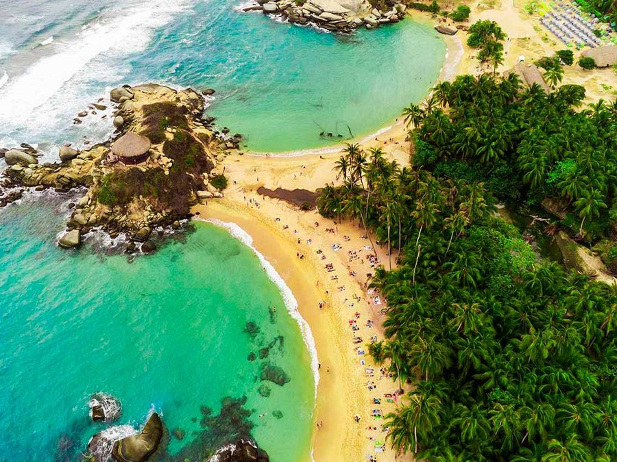
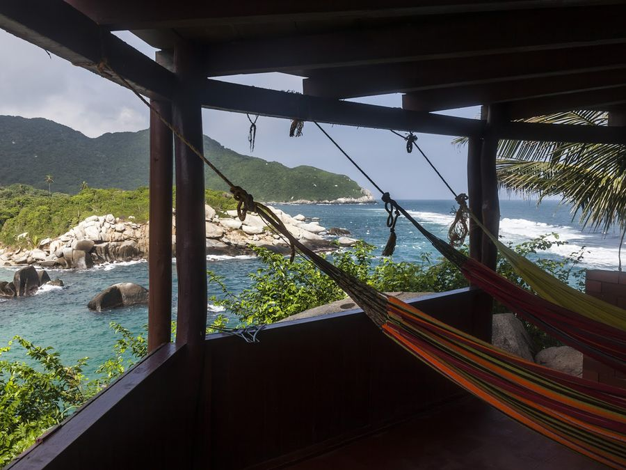
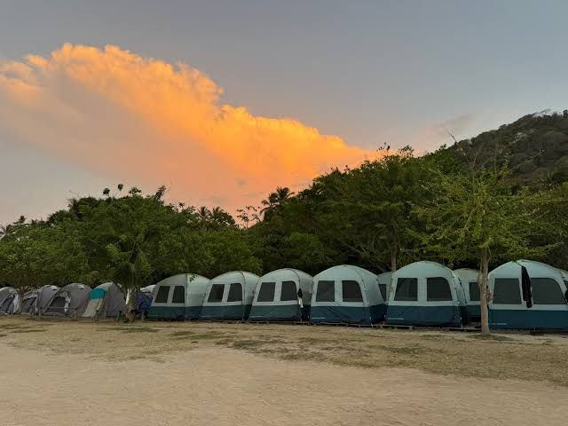
Hamaca abajo en vez de carpa y comida llevada desde afuera
Van Minca → Tayrona (y valijas a Palomino), entrada y seguro
incluye traslados ~USD 27Hamaca del mirador o cabaña, y comer en el restaurante del parque
Parada 4 · 2 noches · vie 15 → dom 17
Playa salvaje, río y fiesta de hostel en ojotas.
Por qué: playa larga y salvaje con onda hippie-mochilera. El plan clásico es bajar el río en gomón con una cerveza hasta donde se junta con el mar. Hay fiesta de hostel hasta medianoche, sin boliche. Es el equilibrio justo entre descanso y joda, y el sábado queda libre para no hacer nada.
Cómo lo calculamos · por persona · enero
| Nivel | Alojamiento | Por noche | Comida y salidas por día |
|---|---|---|---|
| Ajustado | Dorm en Dreamer | ~USD 25 | ~USD 25 |
| Medio | Privada en Dreamer | ~USD 35 | ~USD 40 |
| Con gustos | Hotel de playa | ~USD 80 | ~USD 70 |
Dónde dormir
El mar en Palomino y en algunas playas de Tayrona tiene corriente fuerte. Nos metemos solo donde está permitido, y nunca de noche.
Amanecer en Cabo San Juan. A la tarde, tubing por el río hasta el mar. A la noche, pub crawl o fiesta en la pileta del hostel.
Caminata de vuelta a la entrada y bus de 1 h a Palomino. Retiramos las valijas en el hostel, que nos esperan desde ayer.
Traslado Bus de la entrada de Tayrona a Palomino (~USD 3) y mototaxi al río (~USD 2)
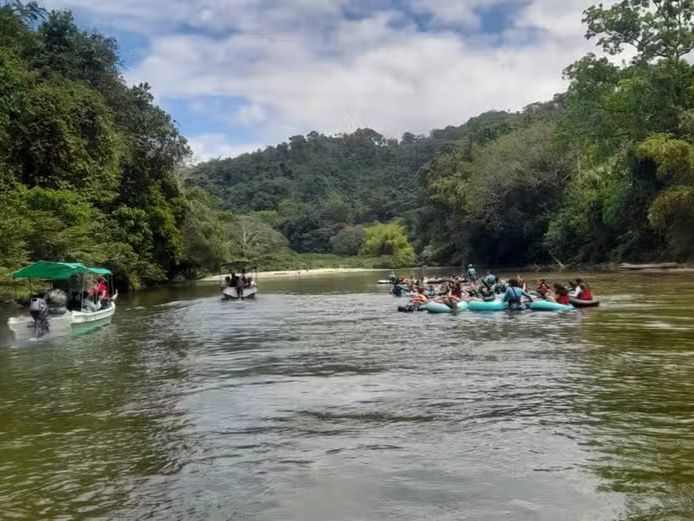
Tubing por cuenta propia y previa en vez de barra
Bus a Palomino y tubing
incluye traslados ~USD 5Pub crawl y tragos en la barra
Playa, pileta y recuperar energía.
El resto del grupo no se mueve: día de playa. Los de 7 días salen con sus valijas al aeropuerto de Santa Marta (~2 h).
Traslado Los de 7 días: Palomino → aeropuerto de Santa Marta (~USD 12)
Día de playa sin gastos
Día de playa
Cena de mariscos en la playa
Parada 5 · 3 noches · dom 17 → mié 20
Caribe de colores, salsa en Getsemaní y barco de fiesta.
Por qué: no es "de viejos", depende de dónde estés. La ciudad amurallada es linda y cara, pero Getsemaní, el barrio de los hostels, es joven: salsa, bares y música en la plaza. Con el barco a Cholón es la segunda parada más fiestera, y el cierre grupal ideal.
Cómo lo calculamos · por persona · enero
| Nivel | Alojamiento | Por noche | Comida y salidas por día |
|---|---|---|---|
| Ajustado | Dorm en Viajero Getsemaní | ~USD 30 | ~USD 35 |
| Medio | Privada en Viajero, KIM o Masaya | ~USD 50 | ~USD 55 |
| Con gustos | Boutique con rooftop | ~USD 100 | ~USD 90 |
Dónde dormir · Getsemaní
Opción a charlar: si queremos el Cholón más local (lanchas de colombianos, música a full), es el domingo. Para eso salimos de Palomino el sábado y perdemos el día libre de playa.
Llegamos a la tarde. A la noche, Plaza de la Trinidad, salsa y bares.
Salimos con todo el equipaje: bus a Santa Marta y ahí la combi puerta a puerta que nos deja en el hostel de Getsemaní (~5 h). Cartagena es base por 3 noches y se camina todo.
Traslado Bus Palomino → Santa Marta (~USD 4) + combi Marsol puerta a puerta a Cartagena (~USD 27)
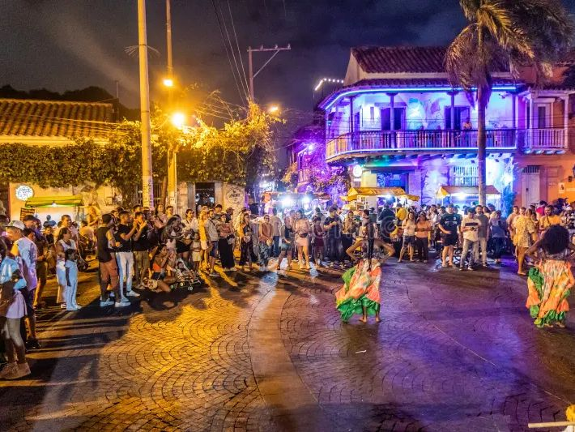
Menú del día y previa antes de Getsemaní
Bus y combi a Cartagena
incluye traslados ~USD 31Transfer privado de Palomino a Cartagena
Una hora de lancha a una laguna de agua turquesa donde se juntan barcos con música y todos están en el agua. Un lunes hay menos gente; conviene un party boat con DJ y barra a bordo. Ojo con los vendedores en bote: preguntar precio antes de pedir.
Valijas en el hostel. Cholón con mochila chica: taxi corto al muelle, barco todo el día y vuelta a la tarde.
Traslado Taxi al muelle (~USD 2); la lancha está incluida en el barco
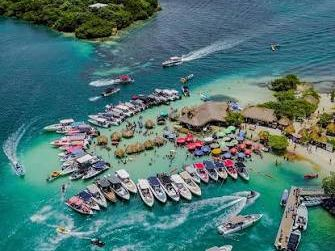
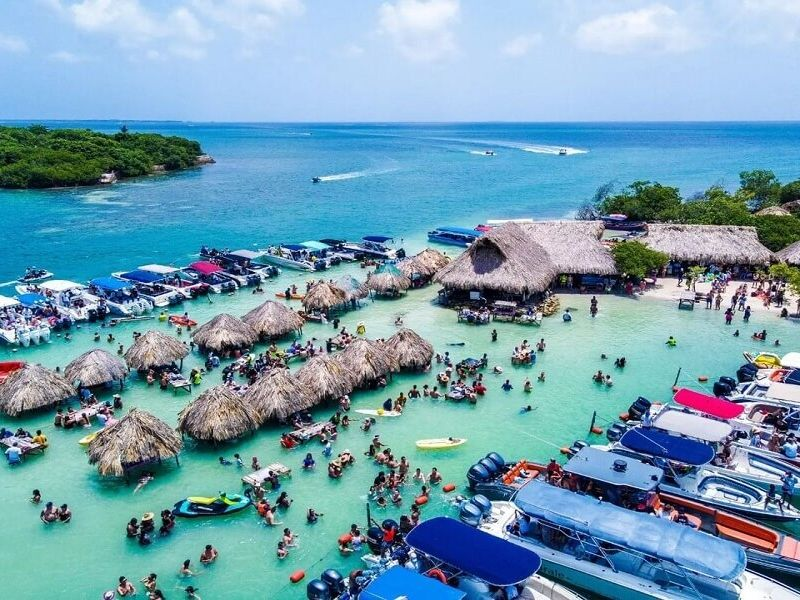
Lancha compartida barata a Cholón, o saltearlo
Barco de fiesta a Cholón
incluye traslados ~USD 2Party boat premium con barra libre o lancha privada para el grupo
Free tour por el centro histórico, atardecer en la muralla y la gran despedida en Getsemaní antes de que se vuelva el bloque de 10 días.
Todo a pie: la ciudad amurallada está a 10 minutos caminando desde Getsemaní.
Traslado Sin traslados
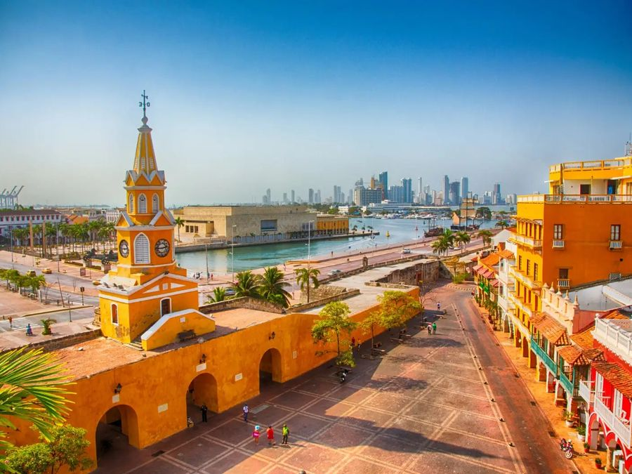
Free tour y salsa en la plaza, sin cena afuera
Free tour por la ciudad amurallada
Cena en la ciudad amurallada y atardecer en Café del Mar
Última mañana en Cartagena y tarde de playa en San Andrés.
Check-out y taxi al aeropuerto (~15 min) con las valijas. Los de 10 días vuelan a casa; el resto, a San Andrés. Allá el aeropuerto está en el centro: tarjeta de turismo, taxi corto y valijas al hostel por 3 noches.
Traslado Taxi al aeropuerto de Cartagena (~USD 4), vuelo a San Andrés (~USD 90 + valija ~25) y taxi al hostel (~USD 5)
Solo mochila en el vuelo a San Andrés
Vuelo con valija y tarjeta de turismo
incluye traslados ~USD 124Hotel con pileta en San Andrés (por noche)
Parada 6 · 3 noches · mié 20 → sáb 23
El mar de siete colores para cerrar el viaje relajados.
Por qué: el mar más lindo del viaje, por lejos: el famoso "mar de siete colores". En el mapa parece lejísimo, pero desde Cartagena es una hora de vuelo, y volver solo para esto sale mucho más caro. Es más turismo colombiano que joda: el cierre para relajar.
Cómo lo calculamos · por persona · enero
| Nivel | Alojamiento | Por noche | Comida y salidas por día |
|---|---|---|---|
| Ajustado | Dorm en Viajero | ~USD 30 | ~USD 35 |
| Medio | Privada en Viajero o Dreamer | ~USD 45 | ~USD 55 |
| Con gustos | Hotel con pileta | ~USD 90 | ~USD 90 |
Dónde dormir
Al llegar se paga la tarjeta de turismo obligatoria: COP 153.000 en 2026 (unos USD 46).
Primera lancha de la mañana para llegar a Johnny Cay antes de que se llene. Después, Haynes Cay, donde se camina en el agua entre mantarrayas.
Caminamos al muelle del centro; la lancha a Johnny Cay y el Acuario viene con el tour.
Traslado Lancha incluida en el tour
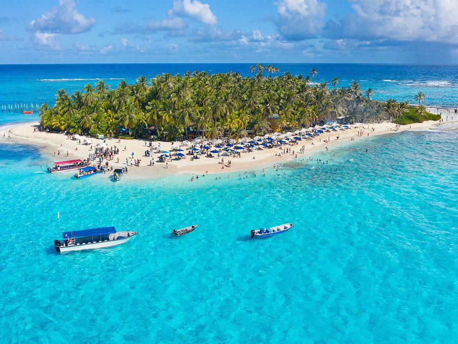
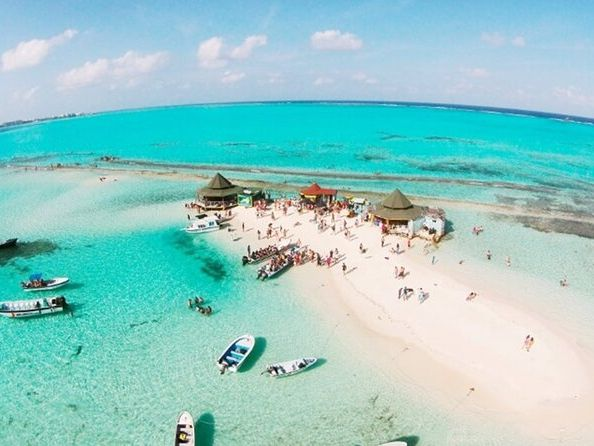
Tour compartido básico a los cayos
Tour Acuario y Johnny Cay con impuesto
Lancha privada a los cayos
Vuelta a la isla (~30 km): snorkel en West View y La Piscinita, atardecer en el oeste y última noche.
Alquilamos “mulitas” (carritos de golf) entre varios: son el transporte del día y paramos donde queremos.
Traslado El carrito de golf es el transporte del día
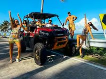
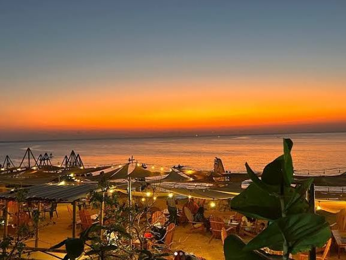
Bus de la isla en vez de carrito de golf
Carrito de golf y snorkel
Bautismo de buceo
Fin del viaje completo.
Check-out, taxi al aeropuerto (queda a minutos) y vuelta a casa.
Traslado Taxi al aeropuerto (~USD 5)
—
Traslado al aeropuerto
incluye traslados ~USD 5—
Calendario
Tocá un día para ver el detalle. Los días fuera de tu bloque se ven más claros.
Proceso de decisión
Cada update es una foto de cómo quedó el grupo después de charlarlo. Durante la llamada podés arrastrar las caras entre Argentina, el check-in y el avión para jugar en vivo: no se guarda nada, al recargar vuelve a la foto del día.
En Argentina, por ahora
Haciendo el check-in
Ya casi: le falta definir algo
Arriba del avión · rumbo a Colombia
Updates